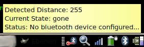
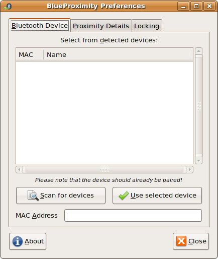
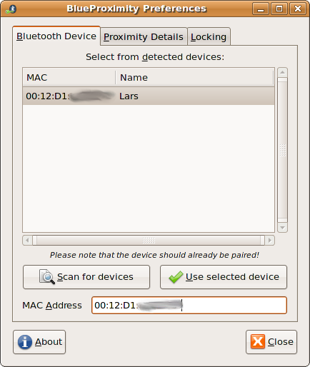
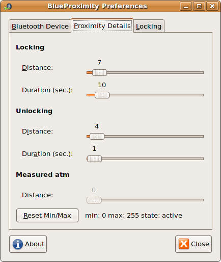
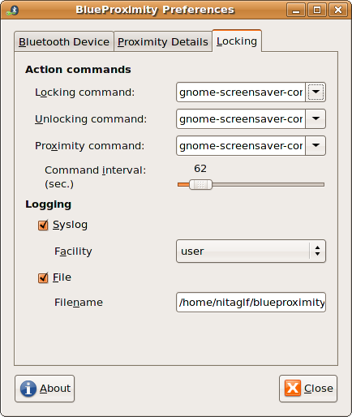
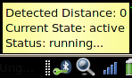
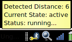
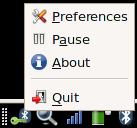
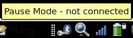

The red key shows what you would never see while the preferences dialog is closed – this shows the screen would be locked now.
This manual tries to give you the most pleasurable experience with your BlueProximity environment. You should read it carefully to get the idea behind and fully understand its possibilities and limits.
Basically BlueProximity is a tool to detect your presence near your computer. It can automatically lock your computer once you leave it and unlock it when you are back. Technically it does it the following way. It connects to your mobile phone via bluetooth and uses the rssi value – something like the automatically set transmission power – to get a distance approximation. It gives more a quality information than a quantity one. Bigger numbers are most likely bigger distances but the rssi value changes slowly and is a little inaccurate since you could also cover your phone with your hands – that will increase the rssi value without any distance change...
You see, we cannot measure exact distances but in stable environments you will most likely get reproduceable results.
There are two ways of installing BlueProximity. One and by far the easiest is by installing the Ubuntu (Feisty) package that can be downloaded via sourceforge. If you are unsure if that will do or you have a different distribution you can also select a normal tarball installation explained below. If the Ubuntu package is installed you find the start icon in your Applications menu in the utilities subfolder. To start BlueProximity from the console just type blueproximity. You can add this one to your session manager's startup profile for automatic start with system boot. Please start it now and move on to the next chapter Configuration in this document.
Using the tarball the prerequisites include a unix system with an installed python interpreter. You need the hcitool tool installed. On my Ubuntu system they are included in the bluez-utils package. You also need the PyGTK (python-gtk2, python-glade2), ConfigObj (python-configobj) and Bluetooth (python-bluez) extensions for python.
You should download the newest version of BlueProximity from its sourceforge site at http://blueproximity.sourceforge.net and unpack it via tar xvzf blueproximity-versionnumber.tar.gz
Start BlueProximity by typing start_proximity.sh which can also be put in your gnome menu and into the session manager for automatic start with system boot.
First you should pair your computer and your mobile phone. Please refer to the FAQ part at the end of this manual how to do that. Once being paired your mobile won't ask for a password when a connection from the computer to the phone is made. There is still the possibility that your mobile phone will ask you to accept the connection which is an additional layer of security appart from the pairing mechanism. Your phone should have an option to disable this question for all or even one special paired device. Disable that question as not disabling it renders BlueProximity quite unusable since you must always do something to your phone when you come back to your computer.
After setting up the phone computer pair you can now move on and configure BlueProximity. After the first start you should see the settings window. If you closed that by accident or it did not show up (because you had installed BlueProximity earlier), you see the BlueProximity icon in the notification area as shown here.

A
single left click on the icon to make the settings screen appear.

You
will see three tabs regarding different types of settings. On the
first tab you may configure the basic connection between computer and
phone, the second tab will show settings to adapt the distance
detection to your hardware, the third tab defines the actions and
commands that should be engaged when locking or unlocking happens.
The first setting you should adjust is the MAC address of your mobile phone. If you know it you can skip the next step.
To find out that address you should configure your phone to bluetooth visible mode. It may be the standard setting but you never know... Now click on the Scan for devices button. A scan takes about 10 seconds. You should find your device in the list now, maybe among other bluetooth devices around your place.

Just
click on your device and on the Use selected device
button. Your device's mac address should now appear in the mac
address field. If your BlueProximity was started for the first time
your changes will be activated after you close the window, otherwise
any change will be active immediately.
Now BlueProximity should already start working but there might be further tuning of distance parameters needed. Note: Your screen will never be locked as long as the settings screen is shown. This way you can change the detection parameters and test them. You will notice how the icon changes if you play with the values. See the FAQ for a good way to tune these settings.
The second tab will look like this:

You
see three sections called Locking, Unlocking and measured atm.
The Locking section sets the parameters when to lock the screen. The distance parameter refers to the ruler in the distance section. You should experiment by placing the phone to a place where you want the lock to happen. Wait some seconds and you should see the value grow. It might be easier if you click on the Reset Min/Max button, move the mobile phone to the lock perimeter and wait some seconds. Take it back to the computer and you will see the maximum value right to the button. Set the lock distance to that value. The duration parameter controls how many seconds the measured distance should stay at least at or above the lock distance to lock the screen. You should set this value to more than one second as it is possible for the rssi value to oscillate sometimes. You will only loose seconds of security but win usability by not unexpectedly locking your screen.
Set the values for unlocking in a similar maner. It is usual to set the distance lower than the lock distance. Please note that BlueProximity uses the new settings immediately.
Switch to the third tab named locking to see the following screen:

The
upper section refers to the commands that BlueProximity will execute
for the according event. The preset is the command to lock/unlock the
screen using the GNOME desktop screensaver. If you are a KDE user you
should activate the combobox and select the xscreensaver-command
entry. Please note that this will only work with the KDE integrated
version of xscreensaver. The original xscreensaver does not include
an unlock command.
The proximity command is a command that is executed every given interval while the user is in reach (the screen is unlocked). That way you can e.g. prevent your screensaver from becoming active while you are near. Actually this is the standard setup.
The lower section refers to logging of state changes. The syslog entry allows you to generate a syslog message on every state change coming from the given logfacility and the loglevel notice. You may also additionally or exclusively log to a certain file.
You could just press the close button and see if your desktop gets locked or use the simulation mode which is always active if the settings dialog is open. You can switch to the second tab to see the actual measured values and the resulting locking state right to the reset button. You may also have a look at the notification area icon which even gives you a nice tooltip when hovering your mouse pointer over it. You will see these icons and messages:

The
green key shows that BlueProximity thinks everything is ok and you
are around within the safe distance.

The
yellow key let's you know that the detected distance is now still
below the lock distance but above the unlock distance. So if your
computer was locked by BlueProximity it would not yet be unlocked
here.
The
red key shows what you would never see while the preferences dialog
is closed – this shows the screen would be locked now.
You should play around with the settings for some time to find a good setting that fits your demand and environment. See the FAQ if you have problems to find good values.
Once started a config file named ~/.blueproximityrc is created and shows all configurable settings with their default values. In this file you may adjust all values found in the gui plus the communication channel to the mobile phone.
If you would like keep the software from connecting to your phone (because you want to transfer files and it is somewhat interfering the transmission) you can activate pause mode. Right click on the icon to get the popup menu

and
select Pause in that menu. You will see the icon changing
to pause mode too.

To
deactivate pause mode do the above steps again. You will see
BlueProximity reconnecting to your phone and work again.
If you would like to stop the software (for whatever reason that might be) you should right click on the tray icon
and
select close in that menu. It may take up to three seconds
to shutdown the software.
Q: I can't see my mobile phone when scanning.
A: You need to activate bluetooth and disable invisibility in your phone's bluetooth settings.
Q: My phone gets detected but the distance is always 255.
A: Most likely your phone uses another channel for
communication than the phones we tried. You can find a usable channel
by brute force or by using the sdptool browse command. In
the output watch for the lines starting with RFCOMM and
Channel: where the number after channel is the needed
channel number. In the config file ~/.blueproximityrc
change the device_channel setting to the new channel.
Channels address different services on the phone – you might
sometimes even appear as a headset e.g.
Q: I want to connect to my phone (or to my computer) to send files but it tells me I am already connected and this won't work. Killing the connection via the phones menu does not work. What can I do?
A: You cannot kill the connection from your phone because BlueProximity restarts the connection immediately afterwards. You can put BlueProximity into pause mode (see previous chapter) or quit BlueProximity for the time connecting. Pause mode should be prefered, of course :-).
Q: My Device (either computer or phone) always asks for a password or pin. How can I change that?
A: Most likely your devices are not paired yet. Please install the gnome-bluetooth applet if that is not there yet. With Ubuntu the package's name is bluez-gnome.
After starting the applet (bluetooth-applet) you should configure your computer as laptop and visible to others. (Right click on the new Bluetooth icon and click on Preferences/Einstellungen)
Afterwards take your phone and do something similar to these steps: (I have a nokia 6230)
0. If BlueProximity is running, rightclick on its icon and select "Pause"
1. Take the phone and enter the BT menu
2. Move to "Paired Devices" (Gekoppelte Geräte)
3. Select Options->"Pair new device" (Neues Gerät koppeln)
The phone should look for unpaired bluetooth devices in reach. It should then show at least your notebooks name (as found in the bluetooth applets settings)
4. Select your notebook and it should ask you for your pin. Now enter the pin from /etc/bluetooth/pin.
5. The bluetooth applet should now state that it trusts your mobile (created bonding).
6. You should now change the settings for the notebook on your phone, so select the notebook
7. Select Options->connect without confirmation (Automatische Verbindung ohne Bestätigung) and set that to Yes.
Now you are ready to use BlueProximity. Please note again that the above steps are only valid on a nokia 6230 - if your phone is different, you should adopt the above procedure to your phones menu setup.
If BlueProximity is still in Pause mode click on Pause again. It should now connect without any hassle.
Q: The locking or unlocking doesn't feel right – it takes too long to get it locked or locks to early or unlocks too late.
A: Use this algorithm to get good results:
Set the lock distance up a bit and increase lock duration even more. (I am using 7/10.) Your milage may vary since it all depends on the hardware and the environment. The distance control is done by measuring the rssi (signal strength indicator) which is not deterministic. Sometimes it goes up to a certain value for no reason and will go back normal soon, so you should set the lock distance to that level and since it won't stay there long set the lock duration value something to like 10.
For unlocking you should select a value of about half of the lock distance but a very small unlock duration. That makes sure you are around and not just passing by but it should still unlock fast enough to use it after you sat down. (4/1 is my value pair here). Note that the distance value is calculated and never does big in-/decrements. so if you come back and the first measured value is 8, it will probably go down one by one per second so the 1 second unlock duration still feels quite long. If there is too much time passing you should increase the unlock distance by one and test it again.